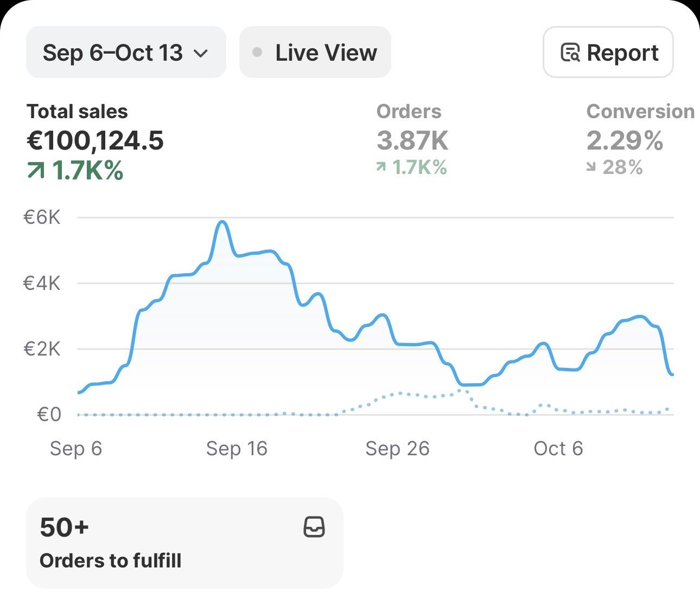

Total Sales (period)
€100,124.5
Two very different businesses — an agency I helped grow, and a brand I built myself from nothing. Both taught me the same lesson: read the data, adjust fast, don't get attached to what isn't working.
Close to three years with Atinuda, across three roles: Sales Representative, then Lead Generation & Outreach Specialist / Web Designer, then Affiliate Manager. I didn't just run campaigns here — I helped build the infrastructure the agency ran on.
Designed and built the full website for Atinuda Agency from the ground up — built specifically to convert visitors into leads, clearly communicate the agency's services, and establish credibility with brands considering working with them.
Alongside the site, I built and managed the agency's own lead-gen pipeline: a consistent monthly flow of qualified brand leads delivered through targeted outreach and campaign management — the same system I now run for myself.
Ran full-cycle affiliate and creator campaigns for consumer brands — sourcing and qualifying the right creators, writing structured briefs, and managing every relationship from cold outreach through to a signed, active partnership.
Built the outreach pipeline for Nutriseed's TikTok Shop campaign — sourced wellness-focused creators and targeted real audience pain points (bloating, low energy, busy mornings) so every lead converted into content that actually drove measurable sales.
Ran the TikTok Shop affiliate creator program — sourcing and onboarding beauty and skincare creators into an active affiliate partnership.
Handled creator sourcing — identifying and qualifying the right creator profiles for the brand before handoff into partnership.
Drove new business acquisition and managed affiliate outreach as part of Atinuda's wider client portfolio.
I owned every part of this business myself — product selection, paid ad management, creative testing, and conversion optimisation. There was no team to lean on, so every decision was mine, and every mistake was too.
The early stage was mostly trial and error: testing products, testing creative, testing offers, and killing anything that didn't work fast rather than getting attached to it. Over time that turned into a repeatable system — read the numbers, decide quickly, double down on what's actually converting.

Running my own outbound pipeline — sourcing, filtering, messaging, tracking — has meant I can offer small business clients a steady, predictable flow of new leads every month, not just a one-off burst of activity.
On top of that, once I built and deployed the AI support agent (Voiceflow, Claude API, Make.com), client operations got noticeably smoother — questions get answered outside normal hours, leads get captured automatically instead of falling through the cracks, and the business owner isn't the one manually replying to every message anymore. It's the same principle from the Shopify brand and the Atinuda pipeline: build the system once, and it keeps paying off after you stop actively working it.